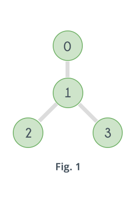
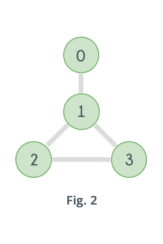
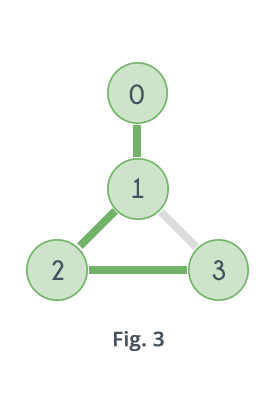
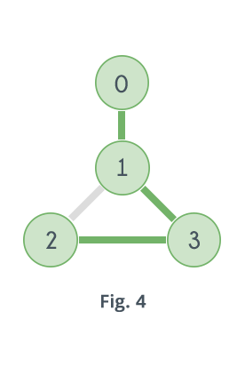

Hamilton Cycle
Problem Statement : Design and implement in Java to find all Hamiltonian Cycles in a connected undirected Graph G of n vertices using backtracking principle.
Hamiltonian Cycle | Backtracking
Hamiltonian Path in an undirected graph is a path that visits each vertex exactly once. A Hamiltonian cycle (or Hamiltonian circuit) is a Hamiltonian Path such that there is an edge (in the graph) from the last vertex to the first vertex of the Hamiltonian Path. Determine whether a given graph contains Hamiltonian Cycle or not. If it contains, then prints the path. Following are the input and output of the required function
Input:
A 2D array graph[V][V] where V is the number of vertices in graph and graph[V][V] is adjacency matrix representation of the graph. A value graph[i][j] is 1 if there is a direct edge from i to j, otherwise graph[i][j] is 0.Output:
An array path[V] that should contain the Hamiltonian Path. path[i] should represent the ith vertex in the Hamiltonian Path. The code should also return false if there is no Hamiltonian Cycle in the graph.Following images explains the idea behind Hamiltonian Path more clearly.

  
Graph shown in Fig.1 does not contain any Hamiltonian Path. Graph shown in Fig. 2 contains two Hamiltonian Paths which are highlighted in Fig. 3 and Fig. 4
Following are some ways of checking whether a graph contains a Hamiltonian Path or not. A Hamiltonian Path in a graph having N vertices is nothing but a permutation of the vertices of the graph [v1, v2, v3, ......vN-1, vN] , such that there is an edge between vi and vi+1 where 1 ≤ i ≤ N-1. So it can be checked for all permutations of the vertices whether any of them represents a Hamiltonian Path or not. For example, for the graph given in Fig. 2 there are 4 vertices, which means total 24 possible permutations, out of which only following represents a Hamiltonian Path.
0-1-2-3
3-2-1-0
0-1-3-2
2-3-1-0
Following is the pseudo code of the above algorithm:
function check_all_permutations(adj[][], n)
for i = 0 to n
p[i]=i
while next permutation is possible
valid = true
for i = 0 to n-1
if adj[p[i]][p[i+1]] == false
valid = false
break
if valid == true
return true
p = get_next_permutation(p)
return false
Figure 5.
Another Example of Hamiltonian Cycle that visit every vertex exactly once shown in Figure 5